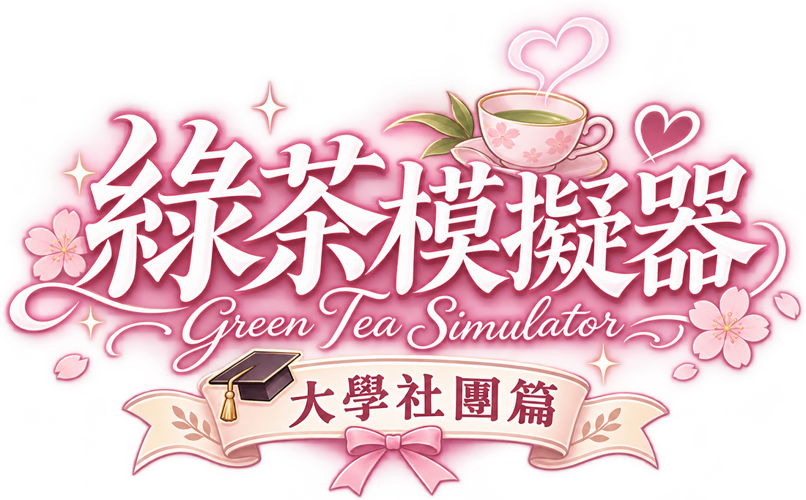

本篇目標 ♡
成為社團人氣王
拿下核心企劃位置
讓競爭對手邊緣化
在 6 週內
不被看穿
！
♪
存檔讀取 ⟳

綠茶模擬器
Green Tea Simulator
大學社團篇 🎓
▶
開始遊戲
✦
NG+ 新周目
❐
繼續遊戲
❏
劇情回顧
♠
卡牌圖鑑
♡
角色關係
⚙
遊戲設定
🏆
成就
!
▥
數據總覽
🎁
特典解鎖
?
遊戲說明
日誌
社群
卡牌
天賦
商店
存檔
☰
✎
日誌
♡
人際
✉
社群
♠
卡牌
✦
天賦
☰
更多
人際
▶ 點擊繼續